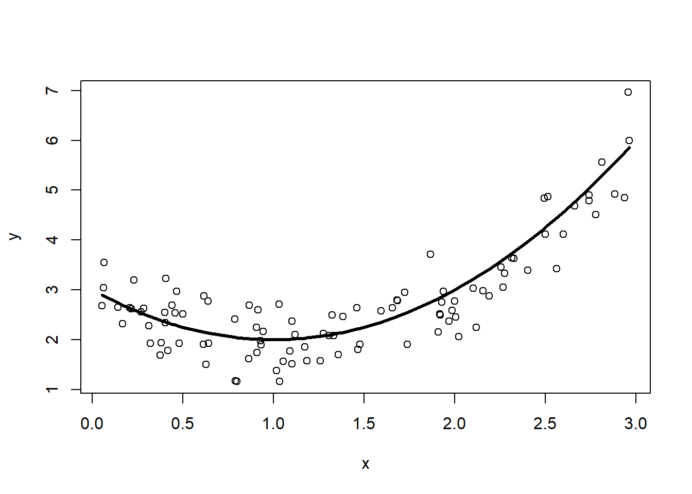
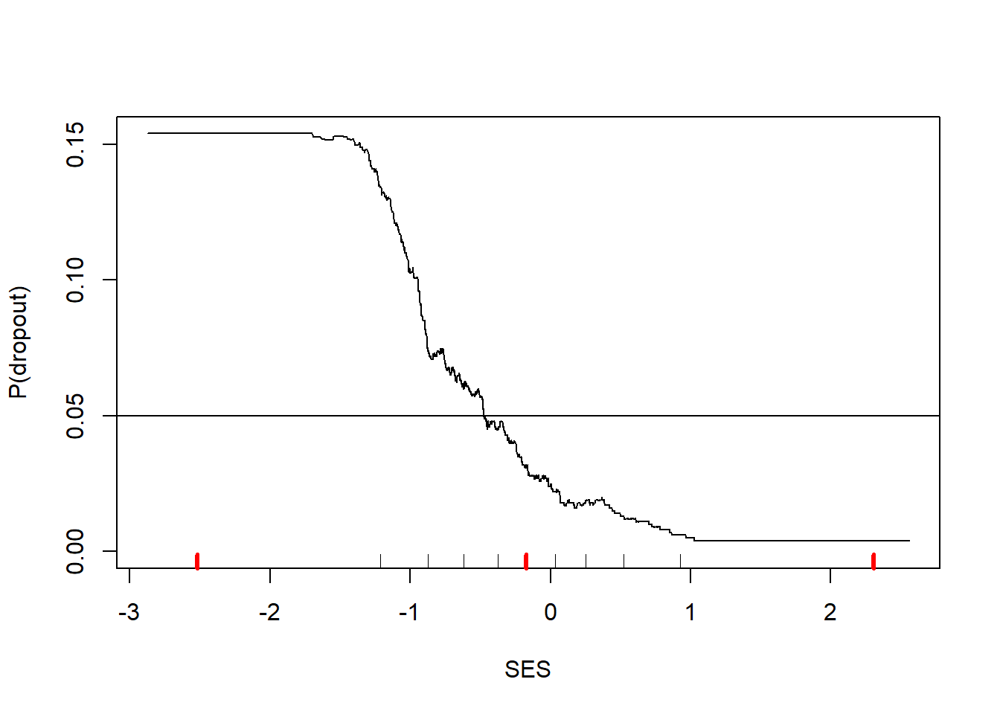
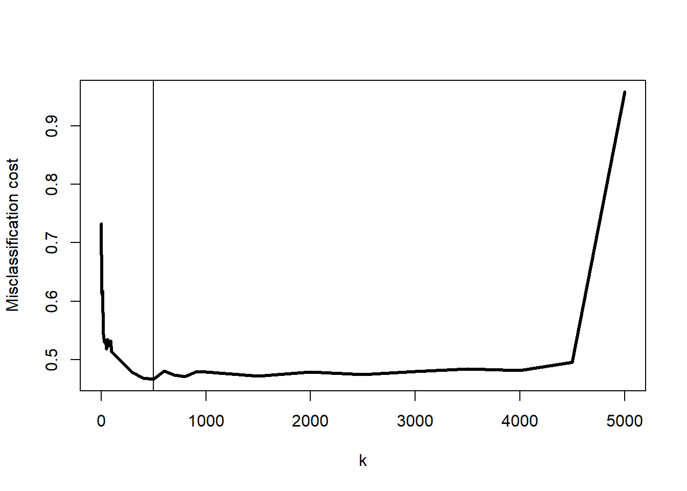
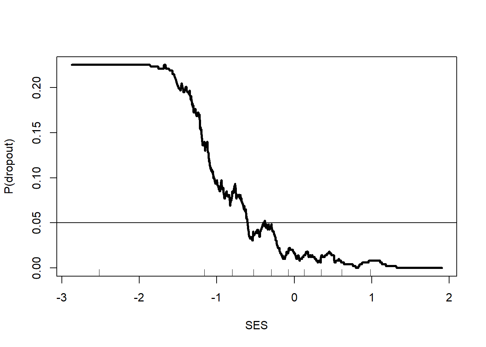
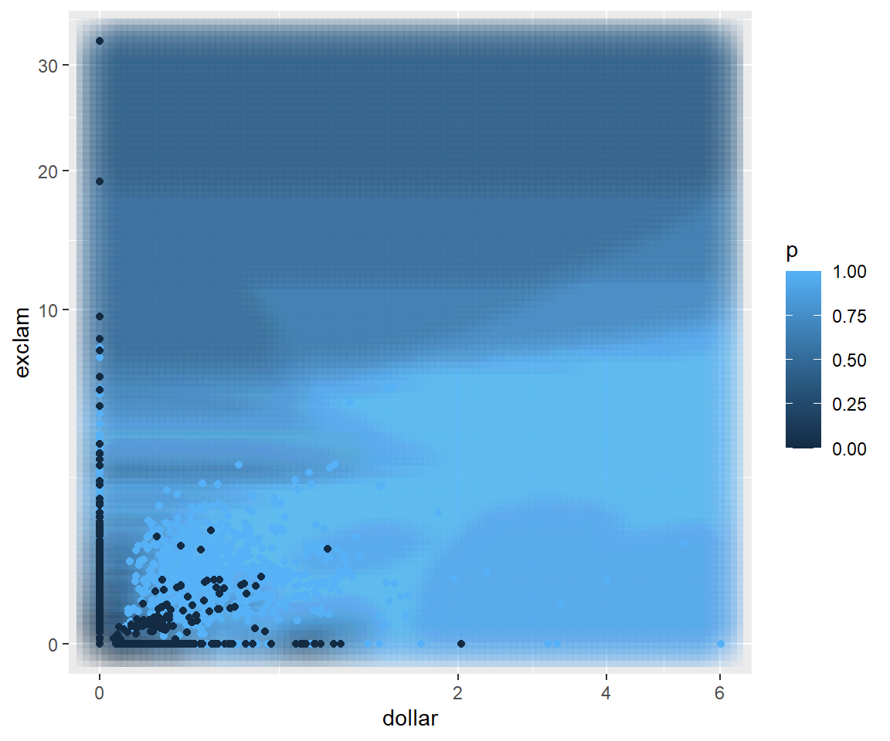
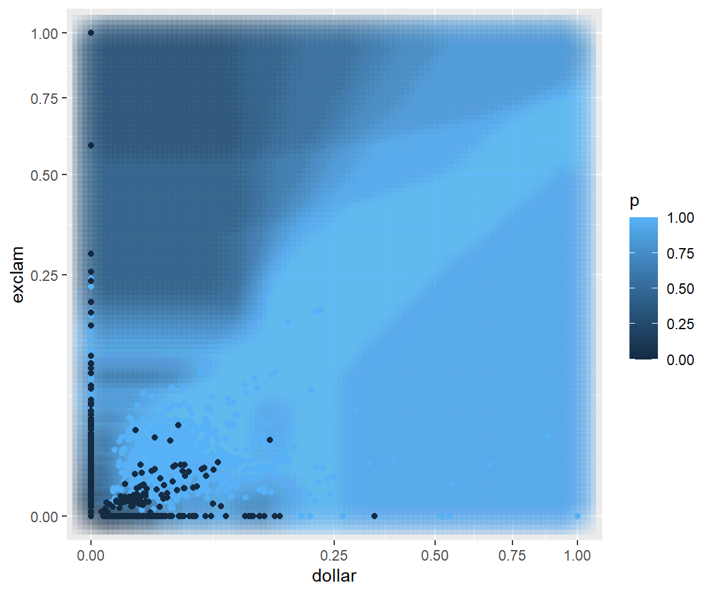

Having explored the naïve Bayes classifier, how it learns from data, and how to evaluate its performance, we now turn to the general problem of supervised machine learning. “Supervised” machine learning is the area of machine learning in which we have existing data with known outcomes that we are trying to predict. In the case of the Georgia parolees, we observed their reoffense status within three years.
1 Overview of prediction models
Refer to Hastie, Tibshirani, and Friedman (2001) Chapters 2.4 and 3.2.
We observe \((y_i,\mathbf{x}_i), i=1,\ldots,N\) drawn independently from some unknown distribution, \(P(y,\mathbf{x})\).
Examples
\(\mathbf{x}\)=characteristics of an adolescent entering drug treatment \(y\)=passes a drug test 12 months after admission (a 0/1 outcome)
\(\mathbf{x}\)=characteristics of a firearm sale (purchaser, dealer, gun features) \(y\)=time when the firearm is recovered in connection to a crime (a positive, possibly censored, continuous outcome)
\(\mathbf{x}\)=customer history of book purchases \(y\)=title of the next book they will purchase (a very large multiclass outcome)
\(\mathbf{x}\)=demographics, ZIP code \(y\)=will vote in next election
\(\mathbf{x}\)=all previous words in a conversation \(y\)=next word produced in the conversation
There is an unknown, noisy relationship between \(\mathbf{x}\) and \(y\) that we want to learn. That is, we want to find a function, \(\hat f(\mathbf{x})\), that minimizes a loss function of the form \[
J(\hat f) = \mathbb{E} \ell(y,\hat f(\mathbf{x})) = \int\hspace{-5pt}\int \ell(y,\hat f(\mathbf{x})) P(y,\mathbf{x})\,d\mathbf{x}\, dy
\]
\(J\) is called a “functional”. Its argument is a function and \(J\) of that function measures the performance of \(\hat f\) at predicting the outcome
\(\ell(y,\hat f(\mathbf{x}))\) describes the cost of predicting \(\hat f(\mathbf{x})\) when the true value is \(y\). Integrating over all \(y\)s and \(\mathbf{x}\)s yields the average loss or risk of using \(\hat f(\mathbf{x})\) to make predictions
The true minimizer of \(J\) is denoted \(f(\mathbf{x})\). \(\hat f(\mathbf{x})\) is our best guess for \(f\)
Three concepts contribute to the magnitude of \(J\)
Noise: Random or unpredictable variations in the data that obscure the underlying relationship between features and the outcome response
Bias: Systematic error caused by restrictions of the model form or simplifying assumptions
Variance: Sensitivity of a predictive model’s outputs to fluctuations in the training data
Example: Ordinary least squares (OLS) (Hastie, Tibshirani, and Friedman (2001) Chapter 2.3.1)
Let \(\ell(y,f(\mathbf{x})) = (y-f(\mathbf{x}))^2\)
Assume that \(f(x)=\beta_0 + \beta_1x_1 + \beta_2x_2 + \ldots + \beta_dx_d = \beta'\mathbf{x}\) (or at least is closely approximated by a linear function of \(\mathbf{x}\))
Problem! We cannot compute \(J(f)\) because we do not know the data distribution, \(P(y,\mathbf{x})\). We have a sample of \(n\) observations from \(P\) so we can approximate \[
\begin{split}
\mathbb{E} \ell(y,f(\mathbf{x})) &\approx \frac{1}{n}\sum_{i=1}^n (y_i-f(\mathbf{x}_i))^2 \\
&= \frac{1}{n}\sum_{i=1}^n (y_i - \beta'\mathbf{x}_i)^2 \\
\hat f(\mathbf{x}) &= \mathbf{y}'\mathbf{X}(\mathbf{X}'\mathbf{X})^{-1}\mathbf{x}
\end{split}
\tag{1}\]
If the approximation in the first line of (1) is not very good then our model ends up not being very good
If we guess poorly at the form of \(f\) then, regardless of how well we fare in (1), our model may not be very good
Predictions methods vary by how they address each of the following questions
Loss function: How does the method penalize the difference between \(y\) and \(\hat f(\mathbf{x})\)?
Functional form: What are the restrictions on the form of \(\hat f(\mathbf{x})\)?
Optimization method: How does the method optimize \(J(f)\)?
Examples of triplets (loss function, functional form, optimization method)
OLS
Loss function: Squared error, \(\ell(y,f(\mathbf{x})) = (y-f(\mathbf{x}))^2\)
Functional form: Any linear transformation of \(x\), \(\beta'\mathbf{x}\)
Optimization method: Use the sample average to estimate \(J\) then there is a closed form solution, \(\hat f(\mathbf{x}) = \mathbf{y}'\mathbf{X}(\mathbf{X}'\mathbf{X})^{-1}\mathbf{x}\)
Logistic regression (for 0/1 outcomes)
Loss function: Bernoulli log-likelihood, \(\ell(y,f(\mathbf{x})) = yf(\mathbf{x}) - \log\left(1+e^{f(\mathbf{x})}\right)\)
Functional form: Any linear transformation of \(x\), \(\beta'\mathbf{x}\)
Optimization method: Use the sample average to estimate \(J\) then use the iteratively reweighted least squares (IRLS) algorithm (discussed in detail later)
Single-layer neural network
Loss function: Bernoulli log-likelihood, \(\ell(y,f(\mathbf{x})) = yf(\mathbf{x}) - \log\left(1+e^{f(\mathbf{x})}\right)\)
Functional form: \(\sigma(w_0+w_1\sigma(\beta_1'\mathbf{x})+\ldots+w_h\sigma(\beta_h'\mathbf{x}))\). Non-linear transformations of linear transformations of \(x\)
Optimization method: Gradient descent through backpropagation
Features of different methods. The loss function, functional form, and optimization method determine the prediction model. These choices have other side effects. I list them here roughly in order of the importance I attribute to them.
Computability: Can you actually fit this model to data in a reasonable amount of time and with a reasonable amount of computing power?
Accuracy: Does this model accurately describe the relationship between \(y\) and \(\mathbf{x}\)? In particular, can it do so on future observations or generalize to other units not in the observed sample?
Interpretability: Does the model help the analyst understand the relationship between \(y\) and \(\mathbf{x}\) and which components of \(\mathbf{x}\) are most important? Note that interpreting a model that does not accurately describe the relationship between \(y\) and \(\mathbf{x}\) is absolutely pointless
Stability: Does the model fit wildly change from sample to sample? Is it greatly affected by outliers?
Missing data: Can the model utilize observations with missing values in \(\mathbf{x}\)?
Bayes risk consistent: As \(n\) gets large does \(\hat f\) approach \(f\)?
2 Example
This section will run through a simulation exploring noise, bias, and variance.
There is a true function out there, hidden from us, that we want to recover. That is the basic prediction model problem. In this case, we will simulate knowing what the true model is, then pretend we do not know what it is, and see how close we can get to matching its predictive performance.
The true model is \(f(x) = (x-1)^2+2\). We do not get to observe this directly, but instead only get to observe 100 \((x,y)\) pairs where \(x_i\) is randomly drawn on the interval \([0,3]\) and \(y_i = f(x_i) + N(0,\frac{1}{4})\), the true model plus random noise generated from a normal distribution with mean 0 and variance \(\frac{1}{4}\). Here is some R code simulating the dataset, plotting the 100 points from the observed dataset, and overlaying the true model on top.
library(dplyr)n <-100d <-data.frame(x =runif(n, 0, 3) |>sort()) |># here is the true f(x) (normally unknown to us)mutate(fx = (x-1)^2+2) |># add some noise unrelated to x,y# rnorm(mean, std deviation)mutate(y = fx +rnorm(n, 0, sqrt(0.25)))plot(y~x, data=d)lines(fx~x, data=d, lwd=3)

Figure 1: Simulated dataset (points) with the true model, \(f(x)\)
2.1 Noise
Figure 1 shows the concept of noise. That is, even if we knew \(f(x)\) exactly, if we make a prediction using it we will still not perfectly predict \(y\). In this simulation \[
\mathrm{noise} = \mathbb{E}(y-f(x))^2 = \frac{1}{4}
\] The average squared difference between the best prediction possible and \(y\) is \(\frac{1}{4}\). Let’s check with our data.
d |>summarize(noise =mean((y-fx)^2))
noise
1 0.2357729
That is somewhat close to \(\frac{1}{4}\), but it is not exact because we just estimated that expected average using 100 simulated observations. A large sample will get us closer
Even that is an approximation. If we really want to exactly compute the noise we need to use an integral. Recall the law of large numbers.
Law of Large Numbers
If \(y_1, \ldots, y_n\) is a random sample from \(p(y)\), then as \(n \to \infty\) \[
\frac{1}{n}\sum_{i=1}^n g(y_i) \to \int_{-\infty}^\infty g(y)p(y)\,dy = \mathbb{E}[g(Y)].
\tag{2}\]
\[
\begin{split}
\mathrm{noise} &= \mathbb{E}(y-f(x))^2 \\
&= \int_0^3 \int_{-\infty}^\infty (y-f(x))^2\,P(x,y)\,dy\,dx \\
&= \int_0^3 \int_{-\infty}^\infty (y-(x-1)^2-2)^2\,P(y|x)P(x)\,dy\,dx \\
&= \int_0^3 \int_{-\infty}^\infty (y-(x-1)^2-2)^2\,
\frac{1}{\sqrt{2\pi \cdot \frac{1}{4}}} e^{-\frac{1}{2}\left(\frac{y - (x-1)^2 - 2}{\frac{1}{2}}\right)^2}
\frac{1}{3}\,dy\,dx \\
\end{split}
\] Set \[
\begin{split}
u &= y-(x-1)^2-2 \\
du &= dy
\end{split}
\]\[
\begin{split}
\mathrm{noise}
&= \frac{1}{3}\int_0^3 \color{orange}{\int_{-\infty}^\infty (u-0)^2\,
\frac{1}{\sqrt{2\pi \cdot \frac{1}{4}}} e^{-\frac{1}{2}\left(\frac{u-0}{\frac{1}{2}}\right)^2}
\,du} \, dx \\
\end{split}
\] The term in orange is the definition of the variance of a \(N(0, \frac{1}{4})\) random variable. \[
\begin{split}
\mathrm{noise}
&= \frac{1}{3}\int_0^3 \frac{1}{4}\,dx \\
&= \frac{1}{4}
\end{split}
\] Now that was a rather long, and perhaps silly, computation to do. It relies on us knowing some key information, like the true form of \(f(x)\) and the distribution \(P(x,y)\), things we will never know in practice. If we know (or assume) that \(\mathrm{Var}(y|x)=\sigma^2\), constant for all values of \(x\), then the calculation simplifies and concludes correctly that \(\mathrm{noise}=\sigma^2\). Still, real applications are never so kind to us. But I include this to show you to connect the simulated values to the concept of noise.
2.2 Variance
Next, let’s explore a model’s variance, not the variance of \(y\), but how our guess for a prediction model changes depending on the dataset. We return to the real world in which we do not know the true form of \(f(x)\). We will make an all-too-common assumption and consider only linear models of the form \(\hat f(x) = \beta_0+\beta_1x\). I will add to our plot the OLS estimate for the line of best fit.
This particular line’s y-intercept and slope depend on the specific collection of 100 simulated pairs \((x_i, y_i)\). There are many lines that we could have gotten from 100 randomly generated \(x\)s and \(y\)s. Let’s see what kind of lines we could have observed. I’ll generate 50 datasets and draw the OLS line for each of them in grey.
Figure 3: Variation in \(\hat f(x)\) from different simulated datasets
All the lines are close to each other, but there is a range of predictions we might get, especially at the ends near 0 and 3. I have also plotted in a heavy black line the average of the 50 lines. This is an estimate of \(\mathbb{E}_D \hat f(\mathbf{x}|D)\), where \(D\) represents a randomly constructed dataset. The notation \(\mathbb{E}_D\) is meant to convey an averaging over the distribution of datasets we might observe. Figure 3 shows the concept of variance of the model. We can formally define the variance of a prediction model as \[
\mathrm{Var} \hat f(x_0) = \mathbb{E}_{D,Y|\mathbf{X}=\mathbf{x}_0} (\hat f(\mathbf{x}_0|D)-\mathbb{E}_D \hat f(\mathbf{x}_0|D))^2
\] where \(x_0\) is a specific value of \(x\).
Let’s use simulation to figure out \(\mathrm{Var} \hat f\left(\frac{1}{2}\right)\).
# or more directly# slight difference because var() divides by nSim-1 instead of nSimvar(predfx0.5)
[1] 0.02096293
For a randomly selected dataset, we can expect our prediction at \(\frac{1}{2}\) to have variance of about 0.02 (“about” because I’m using 1000 simulations to estimate this rather than doing a big integral calculation). Once again, in reality we do not know the distribution \(P(x,y)\) so such simulations are never possible in reality. It turns out that we can get reasonable estimates of the variance from our original linear model fit to those 100 original observations.
# predict at x0 = 0.5 and ask to include standard error of predictionfx0.5<-predict(lm1, newdata=data.frame(x=0.5), se=TRUE)# square the standard error to get variancefx0.5$se.fit^2
[1] 0.01403683
The variance estimated from that single sample is rather close to the true value we got from simulation. Variance is the one component that we can actually get a handle on even if we do not know the true \(f(x)\).
2.3 Bias
Lastly, we need to talk about the “bias”. In this example we know that the true model is a quadratic function, but our model is limited to learning linear functions. No matter how many observations we collect, our linear model will never match the best possible model. That difference is bias.
We characterize bias by how far our average prediction would be from the true model.
The vertical line at \(x_0=\frac{1}{2}\) marks the difference between the true model and the prediction that we would get if we averaged over a lot of datasets. This is the bias caused by our insistence in using a linear model when a quadratic is the true model. This is another quantity that we will never know in reality. Here we see that limiting the flexibility of our model will create incurable bias in our predictions.
Formally, the squared bias is \[
\mathbb{E}_{D|\mathbf{X}=\mathbf{x}_0} \left(f(\mathbf{x}_0)-\mathbb{E}_D \hat f(\mathbf{x}_0|D)\right)^2
\]
2.4 Prediction error is noise + variance + squared bias
We are going to put this all together now. In the end we are interested in the expected prediction error, the difference between the actual value, \(y\), and our predicted value, \(\hat f\left(\frac{1}{2}\right)\). Formally, \[
\mathbb{E}_{D,y|\mathbf{X}=\mathbf{x}_0} \left(y-\hat f(\mathbf{x}_0|D)\right)^2
\] This averages over all the distribution of datasets we might see and the values of \(y\) that we might see. Let’s compute this quantity for our simulation.
nSim <-10000predfx0.5<-rep(0, nSim)ytrue <-rep(0, nSim)for(i in1:nSim){ dSim <-data.frame(x =runif(n, 0, 3)) |>mutate(fx = (x-1)^2+2) |>mutate(y = fx +rnorm(n, 0, sqrt(0.25))) lmSim <-lm(y~x, data=dSim)# generate a "true" value at x0=0.5 ytrue[i] <- (0.5-1)^2+2+rnorm(1, 0, sqrt(0.25))# predict at 0.5 predfx0.5[i] <-predict(lmSim, newdata=data.frame(x=0.5))}# expected prediction error (EPE)EPE0.5<-mean((ytrue - predfx0.5)^2)EPE0.5
[1] 0.3389688
On average when making predictions at \(x_0=\frac{1}{2}\), the squared difference between our prediction and the actual value will be about 0.34. There is a direct connection between the EPE and noise, variance, and squared bias.
# noise + variance + bias^20.25+ VarDfx0.5+ bias2
[1] 0.3344761
The expected prediction error we estimated is almost exactly the same as noise plus variance plus squared bias! The only reason they are not identical here is that our numbers are based on simulating datasets rather than computing the full integrals. In Section 4 I will show that EPE is exactly noise plus variance plus squared bias.
First, we will explore the \(k\)-nearest neighbor model to see how bias and variance influence should influence our modeling choices. You will see that when making a choice to reduce bias, we inevitably increase variance. If we try to reduce variance, we inevitably increase bias. This is known as the bias-variance tradeoff that will haunt us during the rest of our tour of machine learning methods.
3\(k\)-nearest neighbor regression
Refer to Hastie, Tibshirani, and Friedman (2001) Chapter 2.3.2.
Assume squared error loss so that we want to minimize \(J(f)=\mathbb{E}_{y,\mathbf{x}}(y-f(\mathbf{x}))^2\). The minimizer of \(J\) is \(f(\mathbf{x})=\mathbb{E}(Y|\mathbf{x})\). Why?
We only have control over the choice of \(f(\mathbf{x})\), so to make \(J(f)\) small we much set \(f(\mathbf{x})=\mathbb{E}(y|\mathbf{x})\).
If this is true, why would we fit a linear model to minimize squared error. It seems to imply that our prediction model should predict the average of \(y\)’s for those observations with features \(\mathbf{x}\). The problem is that we might not have many (or any) observations in our dataset that have features exactly equal to \(\mathbf{x}\), especially if \(\mathbf{x}\) is high dimensional. However, it is likely that there are some observations with features near\(\mathbf{x}\). If \(f(\mathbf{x})\) is relatively smooth then averaging over the outcomes of observations in the neighborhood of \(\mathbf{x}\) should yield a reasonable prediction model. This is the idea behind the nearest neighbor regression model.
Let \(D\) represent our observed data and \(N_k(\mathbf{x})\) be the set of \(k\) observations in \(D\) that are closest to \(\mathbf{x}\). \[
\hat f(\mathbf{x})=\frac{1}{k}\sum_{\mathbf{x}_i\in N_k(\mathbf{x})} y_i
\]
Determining the “nearest” neighbors can be tricky. Euclidean distance is common. It is not clear how to compute distances for categorical variables. The model, of course, can be very sensitive to the choice of the distance measure.
In linear regression we know exactly how many parameters the model requires. How many parameters does the nearest neighbor model use? If we set \(k=n\) then the resulting model fits a constant everywhere, one parameter. If \(k=1\) then we have estimated \(n\) values for prediction in each of the \(n\) neighborhoods (also known as the Voronoi tessellation of the dataset). As a result we have effectively \(n\) parameters. Generally, we estimate effectively \(\frac{n}{k}\) parameters.
4 Bias/variance decomposition
Refer to Hastie, Tibshirani, and Friedman (2001) Chapter 2.9.
Bias/variance/noise decomposition of expected prediction error
This section uses the notation \(\hat f(\mathbf{x}_0|D)\) to show that the prediction model we estimate depends on the dataset \(D\), which is random. Since \(D\) is random we can think of \(\mathbb{E}_D \hat f(\mathbf{x}_0|D)\) as the predicted value at \(\mathbf{x}_0\) averaged over all the datasets we draw from \(P(y,\mathbf{x})\). For squared error we already know that \(f(\mathbf{x}_0)=\mathbb{E}(Y|\mathbf{x}_0)\). The expected prediction error (\(EPE\)) can be decomposed as:
The decomposition decomposes the expected prediction error into
Noise: The first term represents noise inherent in the system. There is nothing we can do about this given the data that we have. Only observing additional predictors (more covariates) that are predictive of \(Y\) could possibly reduce this
Bias: The bias term measures the difference between the true function and the average of the predicted values at \(\mathbf{x}_0\). If \(f\) is not linear but \(\hat f(\mathbf{x}|D)\) is restricted to be linear then this term can be large
Variance: The variance term measures how sensitive the predicted value at \(\mathbf{x}_0\) is to random fluctuations in the dataset. If the model predicts the same value at \(\mathbf{x}_0\) no matter what dataset \(D\) we use, then this term is 0. Of course, this is not a particularly useful model, but we can get the variance term to go away. The “model” \(\hat f(x)=4\) has variance 0, but has large bias for almost all prediction questions of interest (except, say, “what is 2+2?”)
Bias/variance tradeoff: The bias/variance decomposition leads to one of the fundamental principles of prediction models: If an analyst wants to reduce variance, the price will be an increase in bias. If an analyst wants to reduce bias, the price will be an increase in variance.
Example: \(k\)-nearest neighbors Assume that the \(\mathbf{x}_i\)s are fixed so that the \(y_i\)s are the only thing random in \(D\). \[
\begin{split}
\mathbb{E}_D \hat f(\mathbf{x}_0|D) &= \mathbb{E}_D \frac{1}{k}\hspace{-4pt}\sum_{\mathbf{x}_i\in N_k(\mathbf{x}_0)} \hspace{-8pt}y_i \\
&= \frac{1}{k}\hspace{-4pt}\sum_{\mathbf{x}_i\in N_k(\mathbf{x}_0)} \hspace{-4pt}\mathbb{E}_D y_i \\
&= \frac{1}{k}\hspace{-4pt}\sum_{\mathbf{x}_i\in N_k(\mathbf{x}_0)} \hspace{-4pt}f(\mathbf{x}_i) \\
EPE(\mathbf{x}_0)
&= \sigma^2 +
\left(f(\mathbf{x}_0)-\frac{1}{k}\hspace{-4pt}\sum_{\mathbf{x}_i\in N_k(\mathbf{x}_0)} \hspace{-4pt}f(\mathbf{x}_i)\right)^2 + \frac{\sigma^2}{k}
\end{split}
\]\(k\) controls the bias/variance tradeoff for the \(k\)-nearest neighbor model. Clearly large \(k\) results in small variance. However, large \(k\) also makes the neighborhoods larger so that the bias term gets larger as the model utilizes observations further away from \(\mathbf{x}_0\). The reverse is true when \(k\) is small.
5 Predicting high school dropout using the National Education Longitudinal Study of 1988 (NELS88)
5.1 Background on NELS88
The National Education Longitudinal Study of 1988 (NELS88) is a U.S.-based longitudinal dataset designed to track the educational experiences and outcomes of students, starting with those in the 8th grade in 1988. It provides a wealth of data about students, their academic performance, and their transitions through high school, post-secondary education, and into the workforce. The NELS88 dataset is widely used in education research, policy analysis, and studies on the social determinants of academic success.
The study began with a nationally representative sample of over 24,000 8th-grade students in 1988 and followed those students over multiple survey waves, in 1990 (10th grade), 1992 (12th grade), 1994 (two years post-high school), and 2000 (eight years post-high school). In each of these waves the survey captured data on students’ educational, occupational, and life trajectories. We will focus on the student-level data (test scores, socio-demographic characteristics, and attitudes and behaviors) and their relationship to dropping out of high school.
I have already acquired and cleaned up the dataset. If you want to do further work with the NELS data you may want to look at the NELS data prep.R script. We will start by loading some necessary R packages and the cleaned up dataset.
This will load nels (the complete dataset) and nels0 a smaller cleaned up version of nels. Technically, the NELS data have sampling weights stored in F4QWT. We will not be using them correctly in this exercise to keep things simpler. Every analysis really should use the sampling weights. We will use them when you fit decision trees later in the course.
Let’s take a peek at the first few rows.
head(nels0, 3)
F4QWT wave4dropout typeSchool urbanicity region pctMinor
1 0.003988566 0 Catholic urban northeast none
2 0.003988566 0 Catholic urban northeast none
3 0.003988518 0 Catholic urban northeast none
pctFreeLunch female race ses parentEd famSize famStruct parMarital
1 11-20 male white -0.529 >HS, <College 4 Mom & Dad Married
2 11-20 male white -0.377 >HS, <College 6 Mom & Dad Married
3 11-20 female white -0.859 >HS, <College 6 Mom & Dad Married
famIncome langHome
1 $25k-$35k English only
2 $25k-$35k English only
3 $25k-$35k English only
We will select every third student to be a part of the test set, leaving the remaing two-thirds of the students as training data.
# select every third row for test data# %% is the "mod" operator, gives remainder after dividing by 3dTest <- nels0 |>slice(which(row_number() %%3==0))# select all other rows for training datadTrain <- nels0 |>slice(which(row_number() %%3!=0))
Since most students graduate from high school, one reasonable prediction model is to simply predict that everyone will graduate. What kind of misclassification rate do we get if we set the predicted dropout probability to 0 for all students? Let’s start with setting the decision boundary at \(P(\mathrm{dropout}) > 0.5\). Recall that this is equivalent to assuming equal cost of false positives and false negatives.
# predict no dropouts, all graduatedTest$p <-0dTest |>summarize(misclass =mean( (wave4dropout==1& p <=0.5) | (wave4dropout==0& p >0.5) ))
misclass
1 0.04666491
Since 4.7% of students dropout and we predicted everyone to graduate, our misclassification rate is 4.7%. We were right 95% of the time by predicting that everyone graduates! Clearly, this is unhelpful because it is really important to identify the students at risk of dropping out. Just because a classifier is correct 95% of the time, this example shows you that it is not always useful. Failing to identify a high school dropout is quite expensive, much more costly than incorrectly thinking a student will dropout but they end up graduating. Let’s assume that the false negative cost is 19 times more than the false positive cost. To be concrete, let’s say the false negative cost is 19 and the false positive cost is 1. Therefore, we should predict drop out of \(P(\mathrm{dropout}|\mathbf{x}) > \frac{1}{1+19} = 0.05\). We can then compute the misclassification cost as
So the average misclassification cost is 0.89. Any machine learning method that we hope to use must have a smaller misclassification cost than this.
5.2 A \(1000\)-nearest neighbor classifier?
We will start our investigation of the knn classifier using on the socio-economic status variable (ses), a standardized score that ranges from -2.88 to 2.56. We will determine nearest neighbors by selecting for each student in the test dataset (dTest) the \(k\) students from the training dataset (dTrain) with the most similar values for ses as measured by absolute difference. Let’s start with \(k=1000\). So for each student in the test dataset, we select the 1000 training set students most similar in terms of ses.
In the following code, I run a for-loop through each student in the test set, find their 1000 nearest neighbors in the training set, and compute a predicted dropout probability as the percentage of dropouts in those 1000 nearest students. Note that in R, for-loops in R are very slow and should be avoided. I am only using a for-loop here so we can learn how knn works.
# we will fill this in with predicted valuesdTest$p <-0# set k to 1000 nearest k <-1000for(i in1:nrow(dTest)){ dTest$p[i] <- dTrain |># compute the absolute distance between SES i and all training casesmutate(distance =abs(ses - dTest$ses[i])) |># get the k closest observationsslice_min(distance, n=1000) |># use the average of these as the predictionsummarize(p =mean(wave4dropout)) |>pull(p)}
Let’s check the average misclassification cost for our test set.
# test set misclassification cost if predicted p=0 for all studentsdTest |>summarize(misclassCost =19*mean(wave4dropout==1))
misclassCost
1 0.8866333
# test set misclassification cost with 1000-nn classifiermisclassTest1000 <- dTest |>summarize(misclassCost =mean( 1*(wave4dropout==0& p>0.05) +19*(wave4dropout==1& p<=0.05)))misclassTest1000
misclassCost
1 0.5929344
Misclassification cost is 0.59, much lower than the misclassification cost if we classify everyone as a graduate. Let’s check out what the 1000-nn classifier looks like.
Warning in rug(quantile(dTrain$ses, probs = (0:2)/2), col = "red", lwd = 3):
some values will be clipped

Figure 4: Predicted probability of dropout from 1000-nn model
This figure shows strong threshold and saturation effects. A threshold effect is when the effect of a feature does not kick in until it reaches a certain threshold. Note that SES does not seem to matter (according to the 1000-nn model) until SES exceeds -1.5. Then increases in SES sharply decrease the risk of dropout. Saturation effects are when additional increases in a feature provide no additional changes to the outcome. Once SES exceeds 1.0, there is no further change in the dropout risk. Threshold and saturation effects are exceedingly common in reality. Yet many prediction models only consider linear combinations of features, which will always have bias that cannot be removed with additional data. One of the benefits of the knn classifier is that it can capture any relationship that might exist in the data.
5.3 How many nearest neighbors for \(k\)-nearest neighbor classifier?
We were rather presumptuous in the previous section to set \(k=1000\). Perhaps there is another value of \(k\) that could do even better. Let’s try a range of values for \(k\) and measure their misclassification costs. I first make a design data frame that lists the values of \(k\) that I want to try. It will take too long to try every choice for \(k\) between 1 and 7588 (the number of students in the training dataset), so I created a selection of 36 values for \(k\) in that range. This will allow us to narrow in on the best choice for \(k\).
plot(misclassCost~k, data=design, type="l", lwd=3,ylab="Misclassification cost")# find the best value for kkBest <- design |>slice_min(misclassCost) |>pull(k)abline(v=kBest)kBest
[1] 7000

Figure 5: Misclassification cost by choice of \(k\)
It appears that the best choice for \(k\) is around 500. Let’s look at a narrower range around \(k=500\). If you ran the previous block of code, you realized that it can take a while to try the 36 values of \(k\). It is a good habit to run such for loops in parallel. Each loop is independent of the other so we could have our computer work on multiple values of \(k\) at the same time. The doParallel package makes this really easy. You can use detectCores() to learn how many cores you have available to you.
library(doParallel)
# give R access to 12 corescl <-makeCluster(12)registerDoParallel(cl)# look at a narrow range where performance is bestdesign <-data.frame(k =seq(250,600,by=3), misclassCost =NA)# run foreach() in parallelresults <-foreach(iK=1:nrow(design), .combine = c) %dopar%{ k <- design$k[iK]for(i in1:nrow(dTest)) { j <-abs(dTrain$ses - dTest$ses[i]) |>order() |>head(k) dTest$p[i] <-mean(dTrain$wave4dropout[j]) }return( with(dTest, mean( 1*(wave4dropout==0)*(p>0.05) +19*(wave4dropout==1)*(p<=0.05))) )}# shut down the parallel processing clusterstopCluster(cl)design$misclassCost <- results
Now we can plot the misclassification cost by choice of \(k\) in this narrower range.
Warning in rug(quantile(dTrain$ses, probs = (0:10)/10)): some values will be
clipped

Figure 7: Predicted probability of dropout from optimal knn model, \(k=493\)
6 Leave-one-out cross-validation
In this section, we will learn how to estimate tuning parameters (like \(k\)) when we do not have an independent test set. We will use a fun, classic example of learning a spam email classifier. In this example, we have one dataset consisting of features of emails and a 0/1 outcome for whether the email was spam or not. From this single dataset we also need to figure out the best value for \(k\).
We will start by loading the data used in one of the early efforts to create an email spam filter.
L.F. Cranor and B.A. LaMacchia (1998) “Spam!,” Communications of the ACM, 41(8):74-83.
# download the spam dataset from the UCI machine learning archivedSpam <-read.table('https://archive.ics.uci.edu/ml/machine-learning-databases/spambase/spambase.data',header=FALSE,sep=",")# pull the column names from the data description filea <-scan('https://archive.ics.uci.edu/ml/machine-learning-databases/spambase/spambase.names',what="",sep="\n",skip =32) |>gsub(":.*$", "", x=_)# fix the variable namesnames(dSpam) <-c(a, "spam")
As usual, we will take a peek at the first few rows.
word_freq_xxx: percentage of words in the email that are xxx
char_freq_x: percentage of characters that are x
capital_run_length_average: average length of uninterrupted sequences of capital letters
capital_run_length_longest: length of longest uninterrupted sequence of capital letters
capital_run_length_total: total number of capital letters in the e-mail
spam: 0=no, 1=yes (unsolicited commercial e-mail)
Load ggplot2 so we can make some interesting figures.
library(ggplot2)ggplot(dSpam, aes(`char_freq_$`, `char_freq_!`, color =factor(spam))) +geom_point() +scale_x_continuous(trans='sqrt') +scale_y_continuous(trans='sqrt')
Figure 8: Plot of spam and non-spam emails based on $ and !
Already from Figure 8 you can see some separation between spam and non-spam emails. Spam emails tend to have a strange number of dollar signs and exclamation marks and non-spam emails tend to have none.
While for the NELS88 dataset we built our knn classifier “by hand,” here we will use a more efficient implementation from the R package FNN, Fast Nearest Neighbor Search Algorithms. Inside the FNN package is a knn() function that works well. So you are aware, the class package also has a knn() function but it does not handle ties gracefully and it does not like \(k > 1000\). If you get errors, then you are likely calling class::knn() instead of FNN::knn(). To be sure you are using the right knn(), prefix it with FNN:: like FNN::knn(). This way you can be sure you are using the right version.
library(FNN)
First, we will practice using just the char_freq_$ and char_freq_! as predictive features. In R, it is difficult to use features with $ and ! in their names. We’ll start by renaming them and then we will make a grid of values for char_freq_$ and char_freq_! from 0 to their maximum values. We will extract predicted spam probabilities for all combinations in this range.
dTrain <- dSpam |>select(`char_freq_$`, `char_freq_!`, spam) |>rename(dollar=`char_freq_$`,exclam=`char_freq_!`)# make a grid of values spanning $ and ! frequency # (equally spaced on square root scale)dGrid <-expand.grid(dollar=seq(0, sqrt(max(dTrain$dollar)), length=100),exclam=seq(0, sqrt(max(dTrain$exclam)), length=100)) |>mutate(dollar=dollar^2,exclam=exclam^2)
Now let’s run the knn model to get predictions for all values in dGrid.
# get knn predictionsknnPred <- FNN::knn(# training data Xtrain = dTrain |>select(-spam),# test data Xtest = dGrid,# training data Ycl = dTrain$spam,# number of neighbors for knnk =10,# return probabilityprob =TRUE)
A few important things to note about predicted probabilities from knn(). Interpreting the predicted probability is tricky! Be careful!
the returned value in knnPred will be a vector of factor values “0” and “1”. It returns the majority class of the \(k\) nearest neighbors, ignoring misclassification costs
the predicted probabilities are attached to knnPred as an attribute, so we use attributes(knnPred)$prob to extract them
the values stored in attributes(knnPred)$prob are not the probabilities of being spam, but rather the probability of being from the neighbors’ majority class. If the majority class is a 0, then the values in attributes(knnPred)$prob are actually \(1-P(\mathrm{spam})\)
# extract the probability of predicted class from knnPreddGrid$p <-attributes(knnPred)$prob# convert to P(spam)dGrid$p <-ifelse(knnPred=="1", dGrid$p, 1-dGrid$p)
Now we can see how the 10-nn model divides the space. The lighter blue areas are those more likely to be spam and the dark areas tend to be non-spam.
ggplot() +geom_point(data=dGrid, aes(dollar, exclam, color = p),shape ="square", size=10, alpha=0.05) +geom_point(data=dTrain, aes(dollar, exclam, color = spam)) +scale_x_continuous(trans='sqrt') +scale_y_continuous(trans='sqrt')

Figure 9: Predicted probability based on percentage of $ and ! using 10-nn model
Note that there is a bit of a “scaling” issue. The percentage of characters that are dollar signs ranges from 0% to 6% while the percentage of characters that are exclamation marks ranges from 0% to 30%. Therefore, emails tend to be closer to each other in terms of dollar signs than they are in terms of exclamation marks just because of the difference in spread. Let’s regenerate the figure, but this time I am going to divide all the char_freq_$ values by their maximum (6) and all the char_freq_! by their maximum (30) so that the new versions both range from 0 to 1.
dTrain <- dTrain |>mutate(across(c(dollar,exclam), function(x) x/max(x)))dGrid <-expand.grid(dollar=seq(0, sqrt(max(dTrain$dollar)), length=100),exclam=seq(0, sqrt(max(dTrain$exclam)), length=100)) |>mutate(dollar=dollar^2,exclam=exclam^2)knnPred <- FNN::knn(train = dTrain |>select(-spam),test = dGrid,cl = dTrain$spam,k =10,prob =TRUE)dGrid$p <-attributes(knnPred)$probdGrid$p <-ifelse(knnPred=="1", dGrid$p, 1-dGrid$p)# show how knn divides the spaceggplot() +geom_point(data=dGrid, aes(dollar, exclam, color = p),shape ="square", size=10, alpha=0.05) +geom_point(data=dTrain, aes(dollar, exclam, color = spam)) +scale_x_continuous(trans='sqrt') +scale_y_continuous(trans='sqrt')

Figure 10: Predicted probability based on percentage of $ and !, rescaled to be between 0 and 1, using 10-nn model
The classification boundaries have changed just by changing how we measure distance between emails. This is one of the fundamental challenges of using the knn classifier. The choice of distance measure will change the predicted probabilities, the classification boundaries, and ultimately the predictive performance of the model.
Now for a larger experiment. First, let’s go ahead and include all 57 recorded email features. Second, let’s experiment with five different ways of transforming the features. They include
Rescale by dividing by the maximum value (like we did before)
Standardize by subtracting the mean and dividing by the standard deviation (using scale())
Take the square root of all the values and then standardize
Take the cube root of all the values and then standardize
Take the tenth root of all the values and then standardize
I have no reason to believe that any of these methods would be better than another, but it is easy to try them out.
The last change we are going to make is to use leave-one-out cross-validation to test the performance. Just as it sounds, we will leave out the first email and find the \(k\) nearest neighbors among the remaining emails. Those \(k\) emails will “vote” on whether the first, held out email is spam or not. Then we repeat the same process for the second email, the third email, and so on, always leaving out one email and allowing its \(k\) nearest emails to make predictions for it. When we do not have a separate test set, cross-validation is a convenient method for simulating what it would be like to make predictions on future emails. This is not hard to implement, but it takes some time and effort to do it well.
Fortunately for us, the FNN package has knn.cv() function built-in. It gives the leave-one-out cross-validated predictions for each email in the spam dataset. For this example, we will classify using majority vote (i.e. equal false positive and false negative costs, prediction threshold set to \(\frac{1}{2}\)). As with knn(), there is a prob=TRUE option, but remember it will return the proportion of votes for the most common class (and not the probability of spam).
Figure 11: Misclassification Rate by \(k\) and Transformation
First, it seems that the single nearest neighbor (\(k=1\)) works best.
Also, you can see that how we transform the email features has an effect on the misclassification rate. Taking the tenth root of each of the features and standardizing seems to do the best. Why tenth root? I have no idea. Almost certainly there is another way to transform these email features to get even better predictive performance.
This process is “feature engineering”… trying to figure out what aspects and transforms of the inputs result in the best performance. knn’s performance depends heavily on the scale of the features. One desirable property of a machine learning method is that either the method is indifferent to the scale or that it can learn on its own what transformations result in the best predictive performance.
This dataset was already heavily feature engineered. The researchers already pulled 57 specific features from the emails presumably thinking that these were already good signs of spam. The best known performance on this dataset is 4%. To get that performance the researchers used boosting, a method that is indifferent to the scales of the features as well as any one-to-one transformations (e.g. log, exp, square root, square) of the features.
7 Summary
Predictive performance depends on
Noise
Bias
Variance
\(k\)-nearest neighbors is a rather simple approach for prediction problems. It is based on the idea that when trying to predict an outcome for an observation with features \(\mathbf{x}\) finding the outcomes for known observations with features similar to \(\mathbf{x}\) should work reasonably well.
There is a bias-variance tradeoff. If we choose more neighbors, we reduce variance but increase bias. If we choose few neighbors, then we increase variance but decrease bias.
Using test sets or cross-validation we can choose the models and model parameters that offer the best predictive performance, balancing the bias-variance tradeoff.
Ideally, a machine learning method could learn from the data what is the best way to transform the inputs to get the best predictive performance. knn requires a fair bit of feature engineering to improve predictive performance.
References
Hastie, T., R. Tibshirani, and J. H. Friedman. 2001. The Elements of Statistical Learning: Data Mining, Inference, and Prediction. Springer-Verlag.